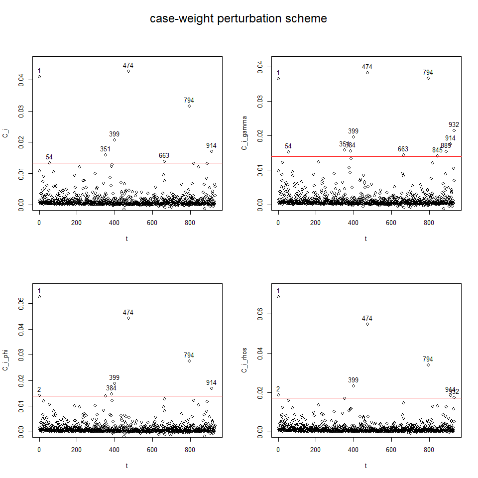

The goal of aplms is fitting Additive partial linear models with symmetric autoregressive errors (APLMS), proposed by Chou-Chen et al., (2024). This framework models a time series response variable using both linear and nonlinear structures of a set of explanatory variables, with the nonparametric components approximated by natural cubic splines or P-splines. It also accounts for autoregressive error terms with distributions that have lighter or heavier tails than the normal distribution.
Installation
You can install the package with:
install.packages("aplms")or the development version of aplms from GitHub with:
# install.packages("devtools")
devtools::install_github("shuwei325/aplms")Model
The details of the model and its assumptions are given in Chou-Chen et al., (2024).
Example
This package provides two datasets to illustrate the model fitting procedure. To load the package:
1. Global annual mean surface air temperature
The first dataset temperature:
data(temperature)
# Create dataframe object to fit the model
datos = data.frame(temperature,time=1:length(temperature))
mod1<-aplms::aplms(temperature ~ 1,
npc=c("time"), basis=c("cr"),Knot=c(60),
data=datos,family=Powerexp(k=0.3),p=1,
control = list(tol = 0.001,
algorithm1 = c("P-GAM"),
algorithm2 = c("BFGS"),
Maxiter1 = 20,
Maxiter2 = 25),
lam=c(10))
summary(mod1)
#> ---------------------------------------------------------------
#> Additive partial linear models with symmetric errors
#> ---------------------------------------------------------------
#> Sample size: 142
#> -------------------------- Model ---------------------------
#>
#> aplms::aplms(formula = temperature ~ 1, npc = c("time"), basis = c("cr"),
#> Knot = c(60), data = datos, family = Powerexp(k = 0.3), p = 1,
#> control = list(tol = 0.001, algorithm1 = c("P-GAM"), algorithm2 = c("BFGS"),
#> Maxiter1 = 20, Maxiter2 = 25), lam = c(10))
#>
#> ------------------- Parametric component -------------------
#>
#> Estimate Std. Error t value Pr(>|t|)
#> intercept 0.056619 0.0041 13.8905 < 2.2e-16 ***
#>
#> ----------------- Non-parametric component ------------------
#>
#> Wald df Pr(>.)
#> time 7589.838 58.583 < 2.2e-16 ***
#>
#> --------------- Autoregressive and Scale parameter ----------------
#>
#> Estimate Std. Error Wald Pr(>|t|)
#> phi 0.0022992 0.0003 7.3902 1.242e-11 ***
#> rho1 -0.2571215 0.0662 -3.8866 0.0001568 ***
#>
#>
#> ------ Penalized Log-likelihood and Information criterion------
#>
#> Log-lik: 200.07
#> AIC : -276.97
#> AICc : -274.46
#> BIC : -94.94
#> GCV : 0.01
#>
#> --------------------------------------------------------------------
plot(mod1)
To perform diagnostic and influence analyses, execute:
aplms.diag.plot(mod1)
influenceplot.aplms(mod1, perturbation = c("case-weight"))2. Respiratory diseases
The second dataset hospitalization:
data(hospitalization)
mod2<-aplms::aplms(formula = y ~
MP10_avg + NO_avg + O3_avg + TEMP_min + ampl_max + RH_max,
npc=c("tdate","epi.week"), basis=c("cr","cc"),Knot=c(60,12),
data=hospitalization,family=Powerexp(k=0.3),p=3,
control = list(tol = 0.001,
algorithm1 = c("P-GAM"),
algorithm2 = c("BFGS"),
Maxiter1 = 20,
Maxiter2 = 25),
lam=c(100,10))
summary(mod2)
#> ---------------------------------------------------------------
#> Additive partial linear models with symmetric errors
#> ---------------------------------------------------------------
#> Sample size: 932
#> -------------------------- Model ---------------------------
#>
#> aplms::aplms(formula = y ~ MP10_avg + NO_avg + O3_avg + TEMP_min +
#> ampl_max + RH_max, npc = c("tdate", "epi.week"), basis = c("cr",
#> "cc"), Knot = c(60, 12), data = hospitalization, family = Powerexp(k = 0.3),
#> p = 3, control = list(tol = 0.001, algorithm1 = c("P-GAM"),
#> algorithm2 = c("BFGS"), Maxiter1 = 20, Maxiter2 = 25),
#> lam = c(100, 10))
#>
#> ------------------- Parametric component -------------------
#>
#> Estimate Std. Error t value Pr(>|t|)
#> intercept 83.317951 14.8082 5.6265 2.44e-08 ***
#> MP10_avg 0.276500 0.0673 4.1057 4.39e-05 ***
#> NO_avg -0.071118 0.0909 -0.7821 0.4344
#> O3_avg -0.050675 0.0632 -0.8014 0.4231
#> TEMP_min 0.073164 0.2201 0.3324 0.7397
#> ampl_max -0.174587 0.2640 -0.6613 0.5086
#> RH_max -0.071845 0.1382 -0.5199 0.6032
#>
#> ----------------- Non-parametric component ------------------
#>
#> Wald df Pr(>.)
#> tdate 13.8541 3.5398 0.005221 **
#> epi.week 16.9563 1.5178 9.978e-05 ***
#>
#> --------------- Autoregressive and Scale parameter ----------------
#>
#> Estimate Std. Error Wald Pr(>|t|)
#> phi 96.19593 5.0808 18.9331 < 2.2e-16 ***
#> rho1 0.45783 0.0318 14.4155 < 2.2e-16 ***
#> rho2 0.23190 0.0345 6.7186 3.211e-11 ***
#> rho3 0.16820 0.0323 5.2017 2.434e-07 ***
#>
#>
#> ------ Penalized Log-likelihood and Information criterion------
#>
#> Log-lik: -3706.73
#> AIC : 7445.58
#> AICc : 7446.61
#> BIC : 7523.26
#> GCV : 99.57
#>
#> --------------------------------------------------------------------
plot(mod2)
To perform diagnostic and influence analyses, execute:
aplms.diag.plot(mod2)and
influenceplot.aplms(mod2, perturbation = c("case-weight"))